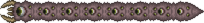

세상을 먹는 자는 오염지대의 보스로, 일반적으로 2번째로 싸우게될 보스이다.
하드모드 이전에 싸우게 될 유일한 다관절 보스이며, 마디마다 방어력과 공격력이 다르므로 표에는 평균값을 적는다. 체력은 모든 마디의 체력을 총합한 값.
|  세상을 먹는 자 |
|||
| 클래식 | 전문가 | 마스터 | |
|---|---|---|---|
| 체력 | 10050 | 15120 | 19224 |
| 평균방어력 | 4.6 | 6.6 | |
| 평균공격력 | 15.3 | 28.3 | 43 |
오염지대의 그림자 구체 3개를 망치로 부수거나 벌레먹이를 오염지대에서 사용하여 소환이 가능하다.
여타 다관절몹과 비슷한 AI를 갖고있다. 땅속을 헤집고 다니며 플레이어에게 돌진하는 패턴은 똑같지만, 데미지가 마디별로 들어가며 마디 하나가 파괴되면 그대로 분열이 되어 플레이어를 공격해온다. 즉, 모든 마디의 체력을 깎아 격파해야 한다는 것.
관통형 무기를 사용할 경우 한번 공격시 마디마다 데미지가 들어가 효과적이다.
대비되는 크툴루의 눈에 비해 단순한 패턴과 낮은 공격/방어력으로 인해 쉽다고 평가받는중. 대충 크툴루의 눈과 비슷하거나 조금 더 어려운 정도이다.
세상을 먹는 자를 격파하면 데모나이트 주괴와 그림자비늘을 드랍한다.